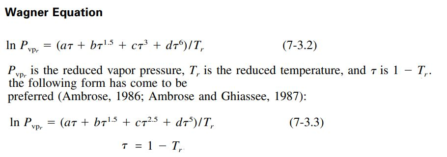
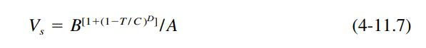
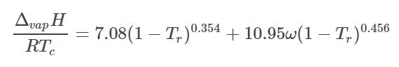
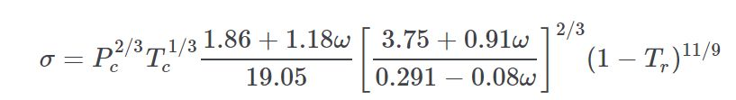
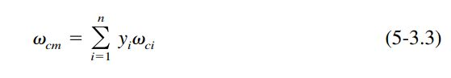

Models¶
The models chosen for the propellant properties database are described below.
In general, if a standard REFPROP fluid is available, then REFPROP will be used as the source of the model data. Standard REFPROP models are present for ethane, ethanol, fluorine, oxygen, methane, methanol, nitrous oxide, ammonia, parahydrogen and propane.
For other propellants like A50, ClF5, IRFNA, MHF3, MMH, MON10 thru 30, N2H4, N2O4, RP1 and UDMH other sources will be used. Data sources usually do not include the full temperature range from freezing point to critical point, so some extrapolation or interpolation of the data is required. Properties of Gases and Liquids, Fifth Edition, will be used to select appropriate models to represent and extend the data.
Vapor Pressure¶
Vapor pressure data will be extended using the Wagner equation.
For a number of published REFPROP fluids, the constants for the Wagner equation are published. It can be seen from the vapor pressure charts for those propellants that REFPROP and the Wagner equation agree very well (see: methane, methanol, ethane, ethanol, propane, ammonia and parahydrogen)
Gas&Liq 5th Ed recommends that the Wagner equation may be used down to a reduced temperature of 0.5, however, all of the REFPROP examples show its continued accuracy below that temperature.
Wagner¶
The equation requires four constants to be fitted to fluid vapor pressure data.
The values of a, b, c and d have been fitted to a number of propellants for use in RocketProps.:
a b c d
Methane -6.02242, 1.26652, -0.5707, -1.366
Methanol -8.63571, 1.17982, -2.4790, -1.0240
Ethane -6.47500, 1.41071, -1.1440, -1.8590
Ethanol -8.68587, 1.17831, -4.8762, 1.5880
Propane -6.76368, 1.55481, -1.5872, -2.024
NH3 -7.28322, 1.5716, -1.85672, -2.39312
PH2 -4.902616, 1.06500, 0.737305, 0.053125
N2H4 -6.7779260205203515, 0.031241419877672347, -1.75576214157275, -0.6791935603862034
N2O4 -8.437950623751371, -3.7198359775967993, 3.2683044393949223, 12.45086649764585
A50 -7.641659365830601, 3.2061563372352757, -2.9346526057929907, 2.9995620039010578
MHF3 -4.430400554283357, -4.289202857522381, 0.4548211727181293, 1.9771250142385894
MMH -6.700466713713631, -0.09747624183487236, -0.7874544884949485, -6.37220831093827
UDMH -7.335910621921567, -0.07120599848815566, 1.0118500681251754, -9.504291228049002
MON10 -8.859867572622312, -0.23569425311772815, -1.21511310516509, -2.7924844994111235
MON25 -8.626779322479342, -0.2877745218667564, -1.2609528745852392, -3.1994074964463137
MON30 -8.394164877030429, -0.3811184987718641, -1.1304799873211373, -3.5220091386630217
IRFNA -6.198317212258754, -3.187645737139488, 4.993054204407724, -14.807512940520226
Edalat¶
The Edalat Vapor Pressure equation can estimate vapor pressure over a range of temperatures. It is taken from the thermo project which is an open-source project on pypi.org developed by Caleb Bell and Contributors (2016-2020).
It can be used to scale a sparse set of vapor pressure data (e.g. normal boiling point) or when no vapor pressure data is available, it can estimate the full range of vapor pressure.

Density¶
Density data will be extended using either the Rackett Equation, the Yamada and Gunn modification of the Rackett Equation or the Daubert Equation.
Gas&Liq 5th Ed defines those equations as follows.


Daubert¶
The Daubert Equation changed the physical quantities and constants of Eq. (4-11.1) into four adjustable parameters to give the equation below. The value of C is generally equal to Tc while A, B, and D are generally close to the values used in Eq. (4-11.3) above. For propellants like MON10, MON25 and MON30, the Daubert equation does a good job of fitting data without needing the temperature-dependent pseudocritical properties of the mixtures.
The constants A, B, C and D were curve fit for MON10, MON25 and MON30.:
A B C D
MON10 184.6090958200138, 97.08205370646357, 852.8788442633142, -0.30396612785737676
MON25 148.1481569994554, 79.40853919233791, 871.4077962994412, -0.3164174025669882
MON30 179.63314607505583, 98.3583884965557, 869.460001600849, -0.29906872709771604
Heat Capacity¶
Liquid heat capacity approximations often start by calculating a residual heat capacity.
The residual heat capacity is the difference between the liquid and ideal gas heat capacities. The following excerpt from Gas&Liq 5th Ed describes one such method.

The above residual heat capacity can be added to the ideal gas heat capacity as calculated by the Joback method below.
Joback¶
The Joback method (often named Joback/Reid method) predicts eleven important and commonly used pure component thermodynamic properties from molecular structure only.
The approach for ideal gas is shown below.

Viscosity¶
Squires¶
Figure 9-13 from Gas&Liq 5th Ed displays the Lewis and Squires liquid viscosity vs temperature correlation. It leads to the scaling equation 9-10.3.
Given a reference viscosity at a given temperature, the value at a different temperature may be calculated.

Heat of Vaporization¶
Pitzer¶
The Pitzer Hvap equation calculates enthalpy of vaporization at arbitrary temperatures. It is taken from the thermo project which is an open-source project on pypi.org developed by Caleb Bell and Contributors (2016-2020).
Thermal Conductivity¶
Nicola¶
The Nicola equation is taken from the thermo project which is an open-source project on pypi.org developed by Caleb Bell and Contributors (2016-2020).
It estimates the thermal conductivity of a liquid as a function of temperature using a CSP method. It is a statistically derived equation using the following correlated terms.

Surface Tension¶
Sastri-Rao¶
Surface tension can be scaled using equation 12-4.1 from Gas&Liq 5th Ed. The value of n varies from 0.8 for alcohols in the Sastri-Rao method to 1.22, or 11/ 9 for other compounds.

For propellants having some surface tension data, n was derived from curve fit. Those values are:
n
N2H4 = 1.322137
N2O4 = 0.960017
A50 = 1.000717
MHF3 = 0.859508
MMH = 0.846186
UDMH = 1.018771
Pitzer¶
The Pitzer surface tension equation is taken from the thermo project which is an open-source project on pypi.org developed by Caleb Bell and Contributors (2016-2020).
For propellants with no surface tension data available, the Pitzer surface tension equation can be used to predict surface tension.
Pseudocritical Properties¶
For propellants that are mixtures of other propellants (like A50, MHF3, MON10, MON25 or MON30) the critical properties are not pure fluid properties, but a combination of the constituent properties.
Tc Mixture¶
For pseudocritical temperature, Gas&Liq 5th Ed recommends the simplest mixing rule; a mole fraction average method. This rule is often called one of Kay's rules.
Comparison of Tcm from Eq. (5-3.1) with values determined from other, more complicated rules shows that the differences in Tcm are usually less than 2% if, for all components the pure component critical properties are not extremely different.

Pc Mixture¶
From Gas&Liq 5th Ed for the pseudocritical pressure, Pcm, a mole-fraction average of pure-component critical pressures is normally unsatisfactory. This is because the critical pressure for most systems goes through a maximum or minimum with composition. The only exceptions are if all components of the mixture have quite similar critical pressures and/ or critical volumes. The simplest rule which can give acceptable Pcm values for two-parameter or three-parameter CSP is the modified rule of Prausnitz and Gunn (1958)

where all of the mixture pseudocriticals Zcm , Tcm , and Vcm are given by mole-fraction averages (Kay's rule) and R is the universal gas constant of Table 4-1.

Omega Mixture¶
According to Gas&Liq 5th Ed, the mixture pseudo acentric factor is commonly given by a mole fraction average (Joffe, 1971)
